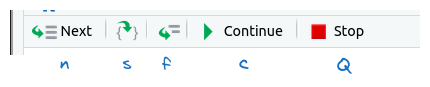
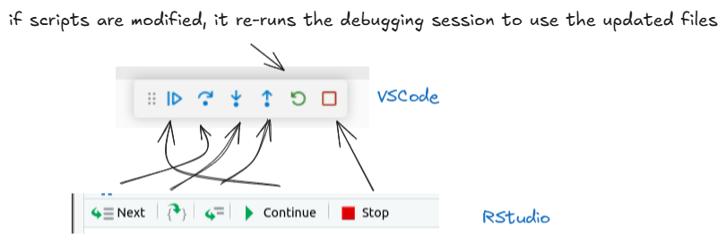
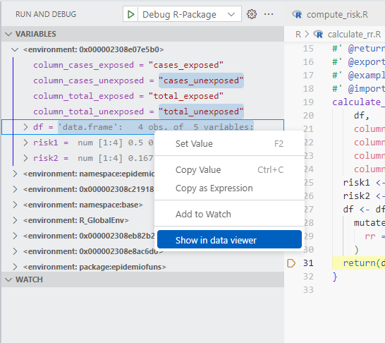

calculate_rr_in_df <- function(
df,
column_cases_exposed = "cases_exposed",
column_total_exposed = "total_exposed",
column_cases_unexposed = "cases_unexposed",
column_total_unexposed = "total_unexposed") {
risk1 <- compute_risk(df[, column_cases_exposed], df[, column_total_exposed])
risk2 <- compute_risk(df[, column_cases_unexposed], df[, column_total_unexposed])
df <- df %>%
mutate(
rr = risk1 / risk2
)
return(df)
}Debugging code in an everyday (often painful) task for developers. In a recent video, I presented how to debug R code in RStudio IDE.
Two native functions available natively in R were shown : browser() and debugonce(). They are very useful to debug your code.
debugonce()is a function that allows you to debug a function the next time it is called. It is useful when you want to debug a function without modifying its code.browser()is a function that allows you to pause the execution of your code at a specific point and enter the debugging environment. It is useful when you want to inspect the state of your code at a specific point in time.
We are going to see how to use these functions in VSCode, as well as introducing “breakpoints”. Breakpoints are markers that you can set in your code to pause execution at a specific line. This allows you to inspect the state of your code at that point and step through it line by line. They are very close to the browser() function. They can also be used in RStudio IDE, but I have to admit that I never used them.
Important: this blog post assumes that you have a functional setup of VSCode for using R.
If you don’t have it yet, I recommend you to check out the following ressources:
The R package to be debugged
We will be working with a very simple toy package called {epidemiofuns}. This package contains two functions meant to be used in epidemiology.
The first one is calculate_rr_in_df():
This function calculates the relative risk (RR) from a data frame containing counts of cases and total individuals in both exposed and unexposed groups. It is calling another function compute_risk(). This function is not the main focus of this post, but it is a simple function that calculates the risk from two vectors.
compute_risk <- function(cases, total) {
results <- cases / total
return(results)
}Debugging code in the R terminal
Before showing you how to use the specific VSCode debugger, let’s see how to debug the code in the R terminal.
In the same way as in RStudio, you can use the debugonce() function to debug the calculate_rr_in_df() function. However, the little toolbar you’ve been used to will have disappeared. You’ll need to use keyboard shortcuts to move on the debugging your code.
Here are the keyboard shortcuts you’ll need to debug your code in VSCode’s R terminal:

Once you’ve got these shortcuts in your head (or on a reminder next to you!), you can start debugging your code !
To be able to use my function easily, I have added in the package a toy dataset called toy_dataset.
I didn’t show the usage of the browser() function in the video, but the way to process is the same.
As you can see, this way to debug your code is not user-friendly. You have to remember the shortcuts, and you don’t have the nice toolbar you are used to in RStudio.
Now let’s move to the VSCode-specific debugger, to see if it’s a more fun way to explore our code !
The VSCode debugger
Prerequisites
Before we start, make sure you have the following prerequisites:
- Having installed the R package
{vscDebugger}:
remotes::install_github("ManuelHentschel/vscDebugger")- Having installed the VSCode extension R Debugger.
Launch a debugging session
Launching a debugging session is very easy. You just have to click on the “Run and Debug” icon in the left menu of VSCode, and then select “R Debugger”.
Since we are working with a R package, we need to select the “Debug R-Package” option. This will launch a debugging session in the context of the package, i.e a call to the function pkgload::load_all() will be made, ensuring the sourcing of all functions in our environment. If you are working with a just a R script, you can select the “Debug R-File” option.
Use breakpoints
Breakpoints are markers that you can set in your code to pause execution at a specific line. This allows you to inspect the state of your code at that point and step through it line by line. Adding a breaking point is very easy. You just have to click on the left margin of the line you want to set a breakpoint on. A red dot will appear, indicating that a breakpoint has been set. This is equivalent of adding a browser() function in your code.
Important note: the breakpoints are not saved in your code. They are only set in the context of the debugging session. This means that if you close the debugging session, the breakpoints will be removed. This is different from the browser() function, which is saved in your code !
Once your debugging session is launched, you can see that the color of the bottom bar has changed. Moreover, a new specific terminal has been opened, called “DEBUG CONSOLE”. This is where you can see the output of your code, and where you can enter commands to inspect the state of your code. Previously, we were working in the classical R terminal, because we were not using the specific VSCode debugging tool.
This way to debug your code is much more user-friendly than the previous one. You can see the state of your code at any point, and you can step through it line by line. You can also inspect the variables in your code, and see their values. Breakpoints are very easy to use, and not intrusive as the use of browser() can be. This feature, coupled to the use of the command palette, make the debugging process easier.
If you are lost between the use of the RStudio command palette and the VSCode command palette, below is a correspondence between the two:

Use debugonce() and browser()
Using the debugonce() and browser() functions in VSCode is very similar to using them in RStudio. You can use them in the same way, and they will work as expected.
Displaying data.frames and plots in the Debug Console
When you are debugging your code, you can display data.frames and plots in the Debug Console.
Natively, data.frames are displayed in a very compact way, which is not very user-friendly. However, like shown in a previous video, you can right-click on the data.frame on the “Variables” panel, and select “Show in Data Viewer”.

On my VSCode (I’m working on Windows 11), data.frames and plots were not opened by default in my current VSCode window. I had to edit the RProfile file to add the following:
if (Sys.getenv("VSCODE_DEBUG_SESSION") == "1") {
Sys.setenv(TERM_PROGRAM = "vscode")
source(file.path(Sys.getenv(if (.Platform$OS.type == "windows") "USERPROFILE" else "HOME"), ".vscode-R", "init.R"))
}To have access to the RProfile file, you can run usethis::edit_r_profile() in the R console. This will open the RProfile file in your default editor. You can then add the code above to the file, and save it (your session must be restarted to use it).
Conclusion
The experience of R programming in VSCode has grown remarkably robust in recent years. While debugging was previously a key advantage of RStudio, the R Debugger extension has effectively closed that gap.
When comparing the two IDEs specifically for debugging: - VSCode offers an elegant visual debugging experience with intuitive breakpoints and a clean variable inspection panel - RStudio provides a more integrated experience but with essentially the same core functionalities.
For those considering a switch from RStudio to VSCode, the debugging workflow should no longer be a concern. Both environments now offer powerful tools for stepping through your code and identifying bugs efficiently.
I hope this blog post helps make your debugging process less stressful and more productive! If you have additional VSCode debugging tips or questions, feel free to reach out to me.
Happy debugging!